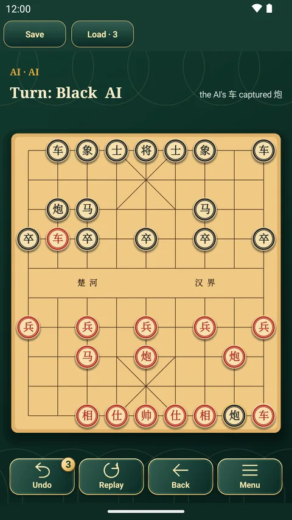

中国象棋
象棋 · Xiangqi · Chinese Chess
楚河汉界，9×10 的交叉点上排兵布阵。将帅不出九宫，炮要隔子打，一个过河的兵也可能决定胜负。
中国象棋玩法与规则
- 目标：将死对方的将（帅）。
- 红方先走（开局前可以改为黑方先走），双方轮流，每次走一步。
- 车走直线，马走“日”字，炮走直线但吃子时必须隔一个棋子。
- 将（帅）在九宫内直走一格，士在九宫内斜走一格；相（象）斜走两格，不能过河，也不能越过中间的棋子。
- 兵（卒）每次向前一步，过河后也可以横走。
- 走到对方棋子所在的位置就吃掉它；两个将（帅）不能在同一直线上直接照面。
- 马先直走一格再斜走一格；第一格被任何棋子挡住时不能走。无合法走法的一方判负，即使未被将军。
- 本应用自动判和：同一局面且同一方行棋出现三次，或双方各走50步未吃子；适用于人类对战和AI对战。
经典棋局里的中国象棋
- 传统汉字棋子，木纹棋盘。
- AI 按内置开局库走出真实的象棋开局。
- 人机对战或同机双人，完全离线。
- 同一个免费应用里还有另外十一款经典棋类，全部可以离线玩。

应用里的其他棋
 斗兽棋
斗兽棋 国际象棋
国际象棋 将棋
将棋 五子棋
五子棋 西洋跳棋
西洋跳棋 四子棋
四子棋 跳棋
跳棋 军棋
军棋 Ludo
Ludo 飞行棋
飞行棋 柶戏
柶戏免费玩中国象棋
安卓手机和平板都能玩，不需要联网。